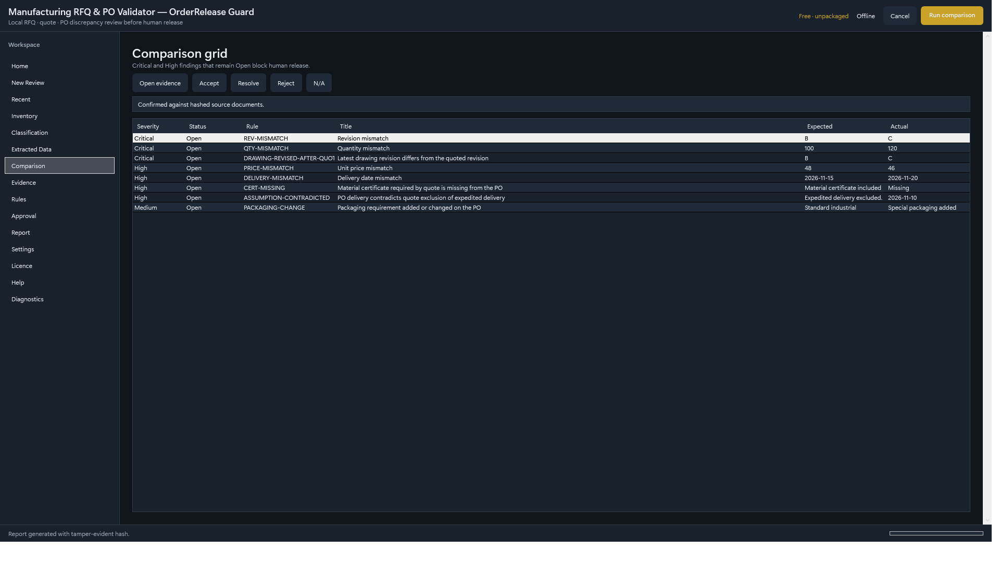
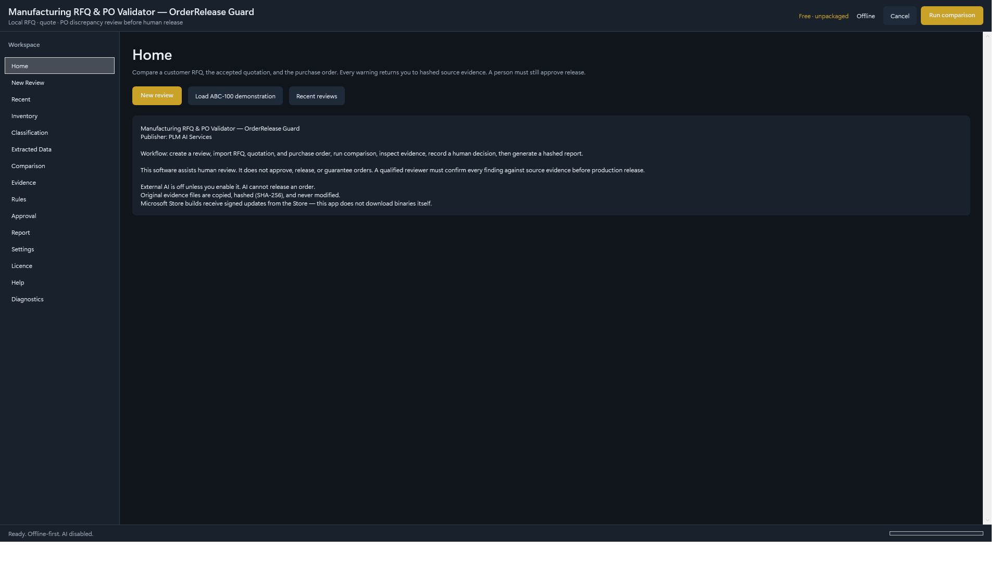

Pilot enquiries open · Windows · Release Guard
OrderRelease Guard — catch RFQ, quote and PO differences before you release the job.
Manufacturers lose money when the purchase order is not the quotation that was accepted. OrderRelease Guard is a local Windows review workstation: it compares RFQ, accepted quote, customer PO and later revisions, shows source-linked discrepancies, and still requires a person to approve. It does not talk to your ERP or auto-enter orders. Pilot enquiries open.
- RFQ / quote / PO discrepancy review
- Local Windows processing
- Human approval before release

Real app UI: RFQ / quote / PO comparison with source-linked discrepancies.
Status: Pilot enquiries open. Use the demo request form. We do not publish list prices on this site.
What it checks
- Revision mismatches between RFQ, quote, PO and later drawings
- Quantity, price, material and delivery differences
- Source-linked discrepancies with severity and workflow
How teams use it
Import the package
Load RFQ, accepted quotation, customer PO and later revision files into a local review project.
Review discrepancies
See deterministic, source-linked differences before anyone releases production.
Approve as a person
Human approval is required. Export a PDF report with document hashes when you need evidence.
Key capabilities
- Local, offline-first review projects on Windows
- Import RFQ, accepted quotation, customer PO and later revision packages
- Revision mismatches between RFQ, quote, PO and later drawings
- Quantity, price, material and delivery differences
- Source-linked discrepancies with severity for keep/hold decisions
- SHA-256 evidence inventory (originals not modified)
- Human approval required for release
- PDF report with document hashes and disclaimer
- Does not talk to your ERP or auto-enter orders
Who buys it (B2B)
- Job shops and machine builders releasing work from customer POs
- Estimating and contract-review teams
- Manufacturing coordinators who need a clear keep/hold decision before the shop floor

Local review projects
Offline-first RFQ / quote / PO packages on your Windows PC.
Discrepancy review
Source-linked differences before a person approves release.
Write to us about Release Guard
Request a demo using the contact form.